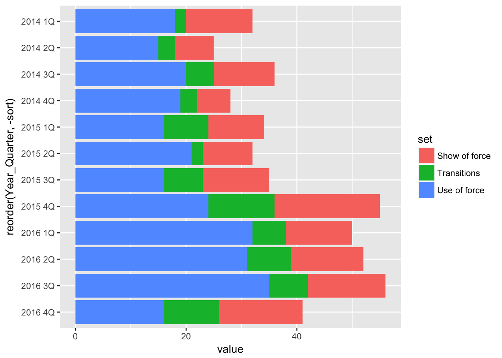
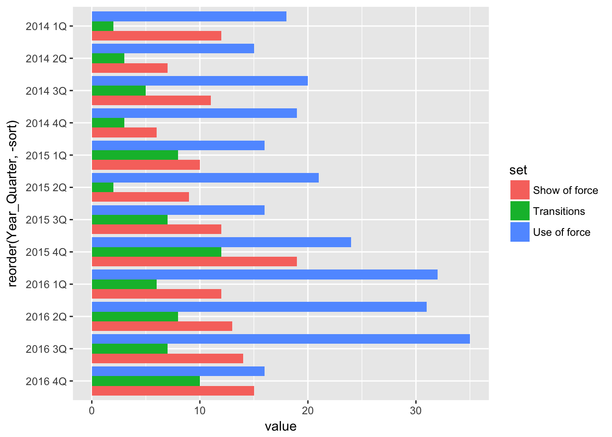
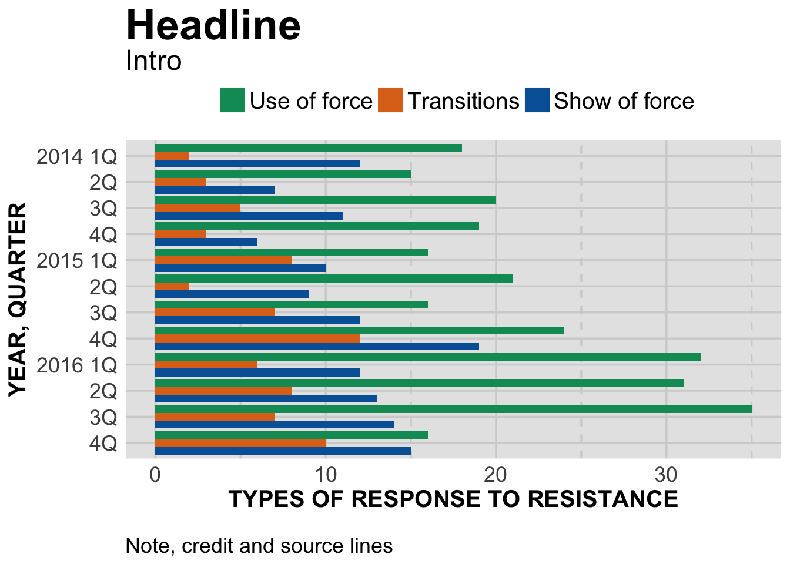

12_ggplotGroupedBars
Grouped Bar chart
A grouped bar chart is one where the bars are not stacked, they lay side-by-side in a group.
Let’s start by importing the libraries and data we need, then take a look at the stacked chart done in the previous guide.
# load the libraries
library(readr)
library(ggplot2)
library(ggthemes)
# bring in the data we worked worked with
df <- read_csv("dfsubset.csv")## Parsed with column specification:
## cols(
## Year_Quarter = col_character(),
## year = col_integer(),
## quarter = col_character(),
## Total_CFS = col_integer(),
## Total_arrests = col_integer(),
## Total_RTR = col_integer(),
## sort = col_integer(),
## set = col_character(),
## value = col_integer()
## )# stacked bars
stacked <- ggplot(df) +
aes(x = reorder(Year_Quarter, -sort),
y = value,
fill = set,
label = value) +
geom_bar(stat = "identity") +
coord_flip()
stacked
To create grouped bars instead of stacked ones, we need to change one line in the code:
grouped <- ggplot(df) +
aes(x = reorder(Year_Quarter, -sort),
value,
fill = set,
label = value) +
geom_bar(stat = "identity", position = position_dodge(width = NULL)) +
coord_flip()
grouped
In geom_bar we add to the command with a position argument. position_dodge is what tells ggplot to place the bars side-by-side.
The rest is design, and is identical to stacked bars (aside from using the “grouped” variable instead of “stacked”).
Note, though, the width of each bar.
If we want labels in each bar, we need to adjust for that when we set the chart up to print, by making the chart deep enough so the bars are wide enough to hold the values.
The alternative is not to have each bar labeled, which is also OK.
#---------------------
# For windows devices only
# windowsFonts(Verdana=windowsFont('Verdana'))
# This function set styles for the chart
# Be sure to run it before you plot
theme_gfx <- function(...) {
theme_set(theme_get() + theme(text = element_text(family = 'Verdana', size= 12, lineheight=0.9))) +
theme(
# edit background colors
plot.background = element_blank(),
legend.background = element_blank(),
panel.background=element_rect(fill="#E5E5E5"),
strip.background=element_rect(fill="#E5E5E5"),
# modify grid and tick lines
panel.grid.major = element_line(size = .6, color="#D2D2D2"),
panel.grid.minor = element_line(size = .6, color="#D2D2D2", linetype = "dashed"),
axis.ticks = element_blank(),
# edit font sizes
plot.title = element_text(size = 27,face="bold"),
plot.subtitle = element_text(size = 18),
#legend.title=element_text(size = 13,face="bold"),
legend.text=element_text(size=14.7),
axis.title=element_text(size=15, face="bold"),
axis.text=element_text(size=13.5),
plot.caption=element_text(size=13.5, hjust=0),
strip.text = element_text(face="bold", size=13.5, hjust=0),
# This puts the legend across the top
legend.position="top",
legend.direction="horizontal",
# removes label for legend
legend.title = element_blank(),
...
)
}
#-----Insert plot here -------------
grouped <- ggplot(df) +
aes(x = reorder(Year_Quarter, -sort),
value,
fill = set,
label = value) +
geom_bar(stat = "identity", position = position_dodge(width = NULL)) +
coord_flip() + theme_gfx()
# add all the titles.
grouped <- grouped + labs(
title="Headline", # your headline
subtitle="Intro",
x="YEAR, QUARTER",
y="TYPES OF RESPONSE TO RESISTANCE",
caption="\nNote, credit and source lines") +
guides(fill=guide_legend(reverse=T))
# Finally, let's make the axis labels better
# Reverse order since we resorted the bars
grouped <- grouped + scale_x_discrete(
labels=c("4Q","3Q","2Q","2016 1Q","4Q","3Q","2Q","2015 1Q","4Q","3Q","2Q","2014 1Q")
)
# color scheme - comment out for B/W PDF
grouped <- grouped + scale_colour_manual( values = c("#0063A5", "#DE731D", "#009964", "#DA2128", "#6F2C91") ) + scale_fill_manual( values = c("#0063A5", "#DE731D", "#009964", "#DA2128", "#6F2C91") )
# make B/W PDF - remember to change name of file!
#grouped <- grouped + scale_colour_grey(start = 0, end = 0.75) + scale_fill_grey(start = 0, end = 0.75)
grouped
#----- End plot --------------In the end, the data we’re using is best presented as a stacked chart rather than this grouped one. With three bars per quarter, it’s a bit hard to discern any kind of pattern.
Here’s an example of where a grouped bar chart was a good choice, as the data was sorted on one category.

Choosing the best chart type for your data is one of the most important design tasks. Many times, you’ll need to generate those charts first to see how clearly the information is conveyed.
Next: Line charts!